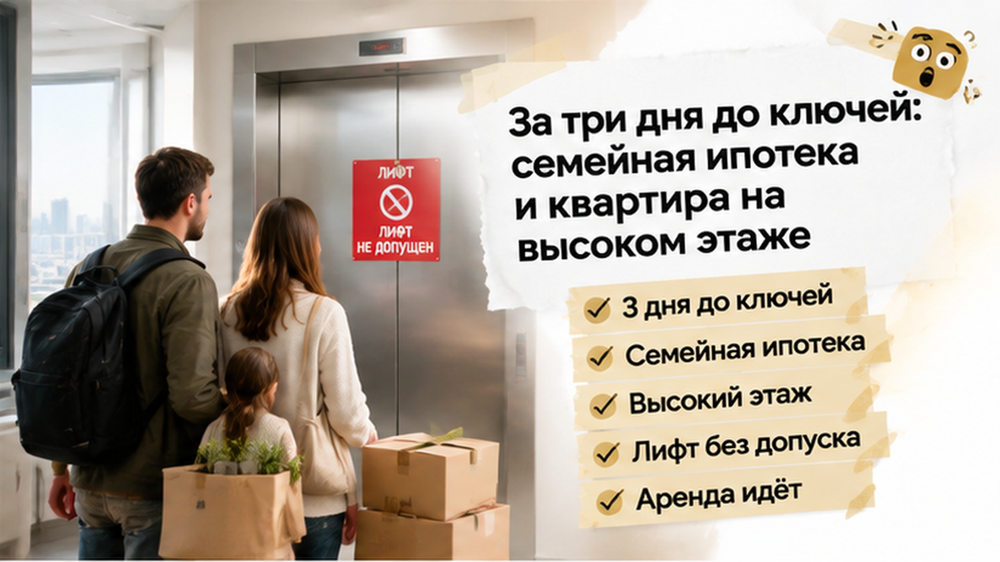
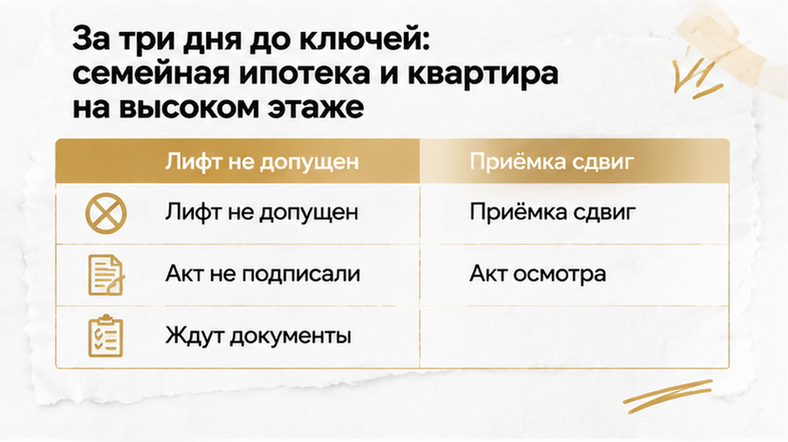
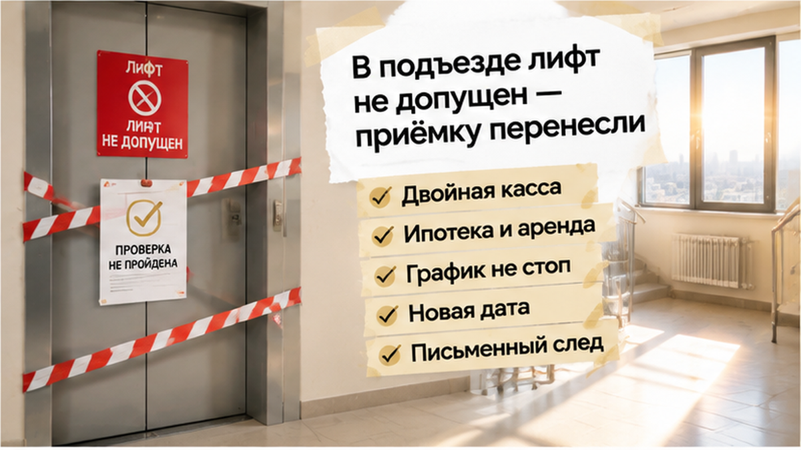
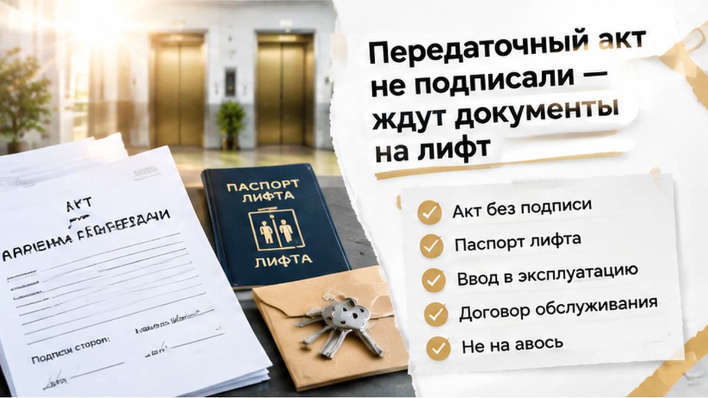
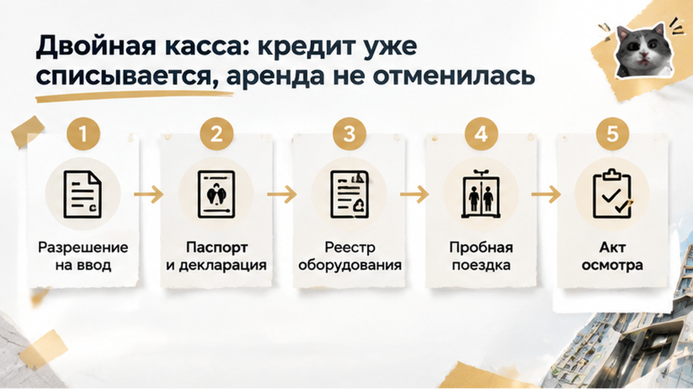
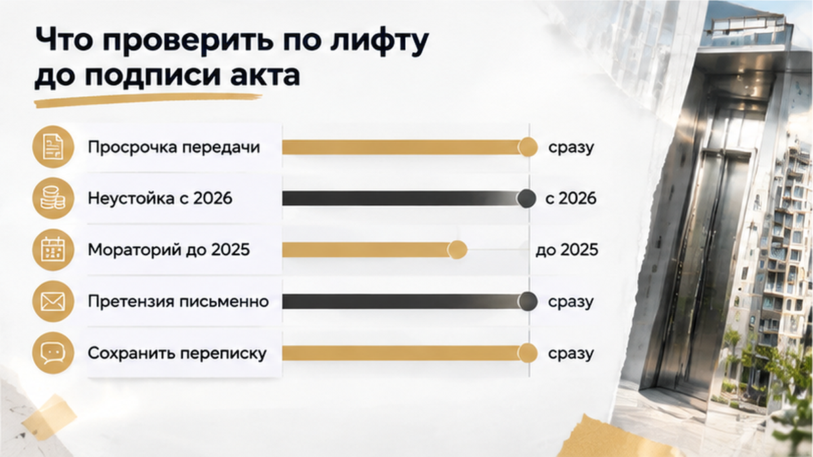

За три дня до получения ключей семья из Тюмени узнала: лифтом в их новостройке пользоваться нельзя. Кабина не прошла полное техническое освидетельствование и не была введена в эксплуатацию. Квартира находилась на высоком этаже, поэтому вариант «поднимем всё по лестнице» отпал — мебель, техника и детские вещи так не переезжают. Ипотека уже списывалась, аренду прежнего жилья отменять было рано. Застройщик попросил подождать и согласовал новую дату передачи квартиры.
Готовитесь к приёмке новостройки в Тюмени? В моих Telegram и MAX разбираю документы, переносы ключей и проблемы, которые лучше заметить до подписи акта.

Уведомление о готовности квартиры выглядело обычно: осмотр, передаточный акт, ключи, потом постепенный переезд. Семья не стала съезжать из аренды заранее: без доступа к новой квартире было непонятно, когда завозить вещи и освобождать старое жильё.
Сначала лифт казался мелкой технической деталью. Но разовый подъём с пакетами и полноценный переезд — разные вещи: коробки, холодильник, стиральная машина, детская мебель. На высоком этаже лестница запасным маршрутом не становится.
Перед приёмкой выяснилось: лифт ещё не прошёл полное техническое освидетельствование и не получил допуск к эксплуатации. Внешне готовая кабина сама по себе ничего не подтверждает.
Здесь важно не смешивать разные истории. Случай, когда из-за отсутствия разрешения на ввод банк не дал второй транш, — про другой риск. В этой ситуации вопрос касался конкретного инженерного оборудования и возможности безопасно пользоваться им после получения квартиры.
Обычный покупатель слышит: «Лифт скоро запустим». Профессионал уточняет: «Покажите акт освидетельствования, паспорт, документы на ввод и обслуживание». Разница проявляется за несколько дней до ключей.

В офисе застройщика семье объяснили причину: лифт не прошёл полное техническое освидетельствование и не введён в эксплуатацию. Пользоваться им как обычным подъёмником пока нельзя, даже если кабина уже ездит и выглядит готовой.
Ключи в первоначальную дату не выдали. Стороны согласовали новый срок передачи, а семья запросила документы на лифт. Передаточный акт решили не подписывать до проверки бумаг и фактической работы оборудования.
Итог на этом этапе простой: передача квартиры перенесена, аренда продолжается, ипотечный график идёт. «Почти готово» не заменяет допуска инженерной системы, особенно когда жильё находится высоко.
За бытовым словом «технадзор» стоят конкретные документы: акт полного технического освидетельствования, паспорт лифта, декларация, сведения о вводе и договор обслуживания. Освидетельствование проводит орган инспекции или аккредитованная лаборатория по требованиям ТР ТС 011/2011.
Отказ подписывать акт до устранения несоответствия требованиям безопасности — не отказ от квартиры. Сначала документы и проверка работы лифта, потом акт и ключи. Подписывать бумаги только ради формального доступа в подъезд семье не требовалось.
Согласны ли вы заходить в новостройку, если лифт формально не сдан?

Самое тяжёлое здесь — даже не отложенный переезд. Ипотека уже идёт по графику, а арендную квартиру пока нельзя освободить. Получается двойная касса: платёж банку плюс аренда жилья, в которое семья ещё может вернуться вечером.
Для квартиры на высоком этаже лифт не мелкая бытовая деталь. Мебель, техника, коробки и детские вещи не понесёшь по лестнице как пару пакетов. Поэтому новая дата передачи зависит не только от состояния квартиры: нужен допущенный к эксплуатации подъёмник.
Автоматически — нет. Ипотечные обязательства зависят от договора с банком, а не от того, успел ли застройщик оформить и запустить лифт. Пока семья ждёт новую дату, кредитный график продолжает работать. Аренду тоже нельзя отменить, если в новой квартире нельзя нормально жить и перевозить вещи.
В офисе застройщика семье предложили подождать наладку и назвали новую дату. Лучше оставить письменный след: почему переносится передача, когда устранят причину и что подготовят к следующему визиту. Сохраните уведомление, переписку и сообщения менеджера — так будет видна вся последовательность событий.
Похожие расходы возникают и при других переносах ключей. Например, когда застройщик сдвигает сдачу на месяцы, деньги на эскроу остаются заморожены, а человеку всё равно нужно где-то жить. Здесь причина другая — лифт не прошёл освидетельствование, — но для семейного бюджета результат ощущается так же.

Передаточный акт — не пропуск за ключами. Подпись означает, что дольщик принимает квартиру в состоянии, соответствующем договору и обязательным требованиям. Если жильё находится высоко, исправный и допущенный к работе лифт относится к нормальному использованию дома.
Семья не стала подписывать акт «на авось». Запросили конкретные документы: акт полного технического освидетельствования, подтверждение ввода лифта в эксплуатацию, паспорт, декларацию и договор обслуживания. Фразы «скоро запустим» для такой проверки недостаточно.
Освидетельствование проводят орган инспекции или аккредитованная лаборатория по требованиям ТР ТС 011/2011. Поэтому у застройщика стоит спрашивать не только про «технадзор», а про название документа, дату, реквизиты и оборудование, к которому он относится.
Если предлагают подписать акт сейчас, а бумаги обещают потом, замечание нужно отправить письменно: передача откладывается до предоставления документов и подтверждения готовности лифта к эксплуатации. Сохраните ответ, уведомление о переносе и новую дату.
По 214-ФЗ дольщик вправе отказаться от подписания передаточного акта, если объект не соответствует обязательным требованиям. Это не даёт возможности бесконечно откладывать приёмку из-за любой мелочи. Но неработающий или не допущенный к эксплуатации лифт в доме, где квартира расположена высоко, нельзя выдавать за косметический недостаток.
Когда документы появятся, нужна проверка на месте. Сделайте пробную поездку: двери должны открываться и закрываться штатно, кабина — останавливаться без резких перепадов, кнопки и связь с диспетчерской — работать. Такая поездка не заменяет освидетельствование, но показывает очевидные проблемы.
Все замечания внесите в акт осмотра и заберите свой экземпляр. Если дату снова перенесут, направьте претензию способом, который подтверждает отправку и получение. Переписка и документы покажут последовательность событий.
Гарантия на инженерное оборудование дома составляет не менее трёх лет с даты первого передаточного акта по дому. Но гарантия начинается после передачи и не заменяет первоначальную проверку. Сначала нужно понять, допускается ли лифт к эксплуатации сейчас, и только потом обсуждать устранение неисправностей в гарантийном порядке.
Разбираю такие ситуации без кабинетного языка. Подписывайтесь на мои Telegram и MAX: там документы, переносы ключей и приёмка новостроек в Тюмени — с понятным порядком действий.

Если квартира на высоком этаже, лифт нужен для нормальной эксплуатации дома. Фраза «наладка заканчивается» ничего не подтверждает: до подписи акта нужны документы и проверка на месте.
Если дату передачи перенесли, попросите официальное уведомление с новой датой и причиной. Обращайтесь способом, подтверждающим отправку и получение, и сохраняйте письмо, ответ и приложения.
Отказ подписывать акт из-за несоответствия объекта требованиям — рабочий юридический шаг. В Тюмени уже были истории, где на приёмке акт не подписали, хотя вопрос касался отделки, а не лифта. Механизм один: замечание фиксируют, документы запрашивают, обещание заменяют подтверждением.

История закончилась не выдачей ключей, а переносом передачи. Лифт не прошёл полное техническое освидетельствование, документы на допуск не предоставили, и семья не стала подписывать передаточный акт «на авось». Ипотека продолжила списываться, аренду пришлось оставить, а застройщик предложил дождаться наладки и согласовал новую дату.
Если квартира не передана в срок по ДДУ, возникает просрочка. Для семьи это каждый лишний месяц ипотечного платежа, аренды и невозможности перевезти вещи в собственное жильё.
По статье 6 части 2 214-ФЗ застройщик отвечает за нарушение срока передачи. Точную сумму требований нельзя назвать без цены договора, даты передачи, условий ДДУ и периода задержки. Онлайн-калькулятор с одной цифрой не заменяет проверку документов.
Отдельно учитывается период моратория. Ограничения по начислению неустойки по постановлению Правительства № 326 действовали с 22 марта 2024 года по 31 декабря 2025 года. С 1 января 2026 года новая просрочка снова может накапливаться по общим правилам.
Зафиксируйте договорную дату и дату, которую предложил застройщик после переноса. Сохраните уведомление, переписку, расходы на аренду и подтверждения ипотечных платежей. В претензии укажите причину переноса, потребуйте передать квартиру в согласованный срок и приложите расчёт после проверки периода просрочки.
Претензию направляйте способом, подтверждающим содержание и получение: заказным письмом или через канал, предусмотренный договором. Устный разговор быстро превращается в «мы такого не обещали». Письменная хронология сохраняет даты, причины переноса и перечень необходимых документов.
Деньги не отменяют техническую проверку. Даже при нарушенном сроке нужно понять, можно ли безопасно пользоваться квартирой и общим имуществом. Совет «заберите ключи, а потом разберётесь» такую проверку не заменяет.
Финал этой истории простой: семья не отказалась от квартиры и не подписала акт без подтверждения безопасности. Передачу перенесли до готовности лифта, а расходы и даты сохранили для разговора с застройщиком. Это рабочая позиция: не паниковать, но и не принимать обещание вместо документа.